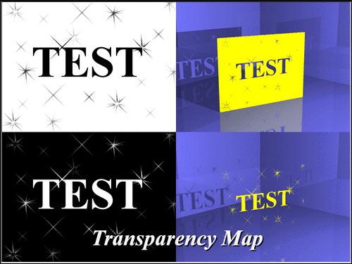

Transparency maps are used to make an otherwise opaque surface have various
amounts of colored transparency. Transparency maps are simply images that use
the intensity of each color to indicate the amount of transparency on a
pixel-by-pixel basis. The lower the intensity of the color, the greater the
transparency. Totally black areas in the transparency map will cut a hole in the object’s
surface.
Transparency maps are used to make an otherwise opaque surface have various
amounts of colored transparency. Transparency maps are simply images that use
the intensity of each color to indicate the amount of transparency on a
pixel-by-pixel basis. The lower the intensity of the color, the greater the
transparency. Totally black areas in the transparency map will cut a hole in the object’s
surface.
The Value determines how much effect the image has on the surface. A higher number would make the surface more transparent. Reasonable values for Transparency maps are from 1 to 1000%.


Related Topics:
Color Maps
Bump Maps
Specular Maps
Diffuse Maps
Reflectivity Maps
Ambiance Maps
Cookiecut Maps
Displacement and Fractal Maps